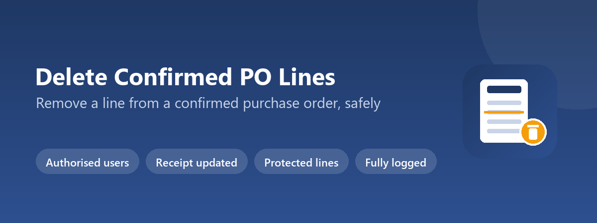

Lets authorised buyers delete a line from a confirmed purchase order, with the receipt updated and the change logged.
The vendor cannot supply one item? Instead of cancelling the whole order, an authorised buyer deletes that line from the confirmed order. The receipt stops expecting those goods, and a note on the order and on the receipt records what was removed and by whom.
🔑 Authorised users onlyOnly members of a dedicated access group can delete a line; everyone else keeps Odoo's standard refusal. |
📦 Receipt updatedThe goods still expected for that line are cancelled on the receipt, and the receipt itself is cancelled when nothing else is due. |
🔒 Protected linesA line with goods received, even if returned since, or already on a vendor bill cannot be deleted. |
📝 Fully loggedA note on the purchase order and on each open receipt lists what was removed, signed by the user who did it. |
💬 Clear refusalsWhen some lines cannot be deleted, one message lists each of them with the reason. |
🚫 No product swapsThe product on a line cannot be changed once goods have been received for it. |
Odoo 18.0 • Community & Enterprise • depends on Purchase and Inventory • Licence LGPL-3
Odoo implementation and development. thecodelegion.com